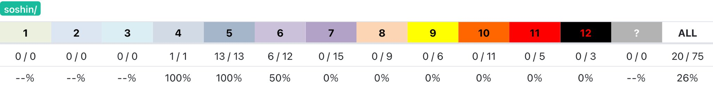
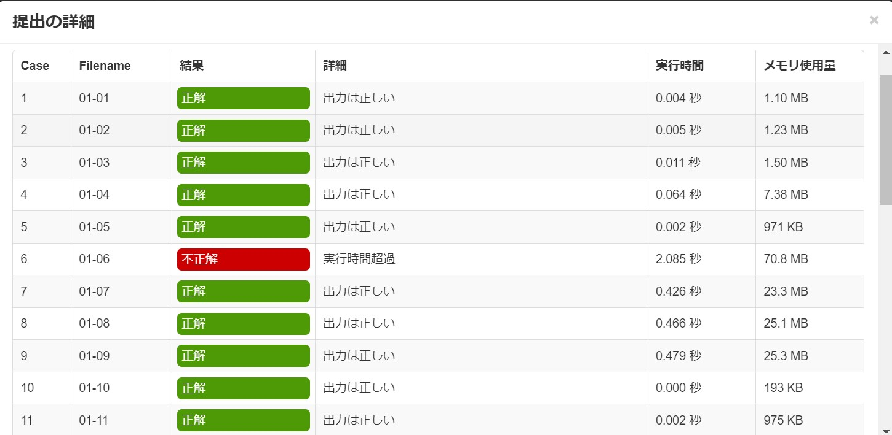

12月にギリギリの点数で2次予選を突破することができ、本選に出ることができました。
過去問は難易度5までを全部と、難易度6を半分くらい解きました。
結果は100-100-16-0-9で計225点でした。
1問目
点数:100点 かけた時間:15分
そこそこすぐに解法が分かり、15分で100点を取れました。
2問目
点数:100点 かけた時間:1時間15分
1時間ほどかけて部分点59点を取りました。
その後終了45分前くらいに満点解法を思いつき、100点を取れました。
3問目
点数:16点 かけた時間:30分
満点解法が全く思いつかなかったので、粘らずに部分点だけ通しました。
4問目
点数:0点 かけた時間:1時間
これも満点解法を思いつかなかったので、部分点だけ通...
!?!?!?!?!?!?
計算量の見積もりを間違えていました。
5問目
点数:9点 かけた時間:45分
100点とれるわけないので、部分点だけ取りにいきました。
思ったよりも時間かかった...
総括
時間配分もかなりうまくいって、持っている力を出し切れたと思います。
本選Bランクだといいな...